Episode cards and the player's episode list
W15, 2026-11-25. The user asked, "in all of the devices the way multiple episodes cards are shown is a bit small ... do this change only if needed". The review came first; the verdicts, then the frames.
Verdict per platform (before)
| Platform | Show page | Player's list | Verdict |
|---|---|---|---|
| Android phone | 16:9 picture 128 dp (31 percent of 411 dp); "S2 E1" line, title, facts with size, 2 line synopsis: up to 5 text lines beside a small picture | The same row, full screen window | Small and text heavy: changed |
| Tablet, foldable, desktop (shared Compose) | 208 dp picture, 2 to 3 columns from 1232 dp; same long facts line | Desktop: a 1040 dp centred dialog with a choices column | Picture small for the card: changed |
| Android TV | 176 dp picture (18 percent of 960 dp), 5 text lines | 1100 dp centred panel | Text outweighs the picture: changed |
| Web (phone, desktop, TV) | Text only rows: held episodes had no picture at all (only the missing ones had a still) | Text only buttons, file names as titles, centred dialog | No imagery: changed |
| iOS | Shares EpisodeRow, EpisodesPanel and PlayerEpisodes with Android | Follows the Android change (not built here: needs the Mac) | |
What changed
- One card (
EpisodeRow): 16:9 picture about 40 percent of a phone card (136 to 220 dp), 264 dp on a TV, 256 dp in a large window. Code pill top start, watched tick top end, progress along the foot, one line title, then running time and state (Watched, Stopped at, Up next, Playing), the air day only on a TV or in a large window, the synopsis (2 lines) only on the show page. No file name, no file size. - Player list: phone upright is a
PhoneSheetbottom sheet (82 percent high, season chips stay at the top, the playing episode scrolled to and tinted); TV, tablet and phone on its side get a panel at the end (32 percent of the width, 340 to 480 dp, slides in 200 ms, none under reduced motion, Back closes it, the remote stays inside); desktop the same panel (380 to 520 dp) with arrow keys, Esc and the wheel. The playing card alone shows its synopsis. - Web:
HeldStill(Telegram thumbnail, TMDB still over it, number placeholder, code pill, tick, progress), loaded when near the screen; the player's list is a panel at the end from 600 px and a bottom sheet under it.
Android: the show page's cards
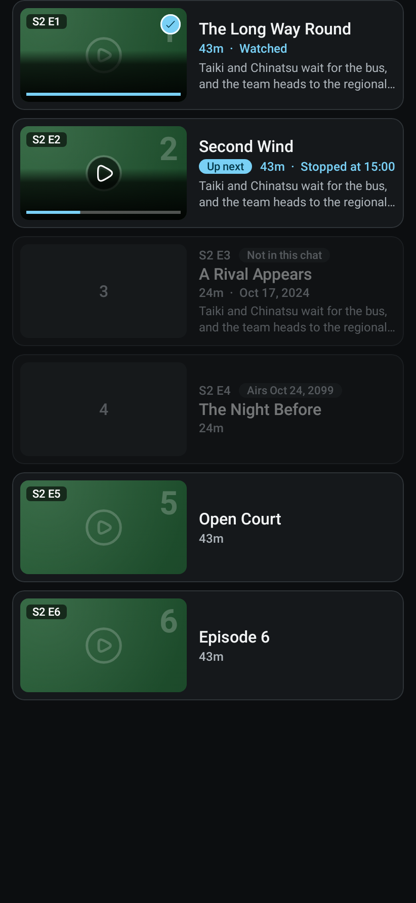
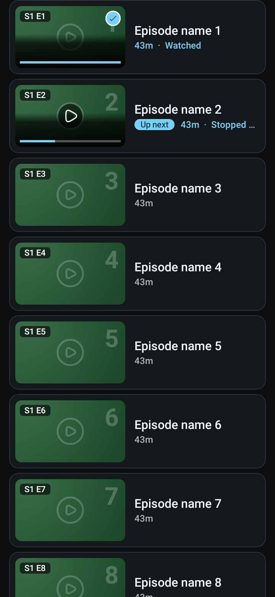
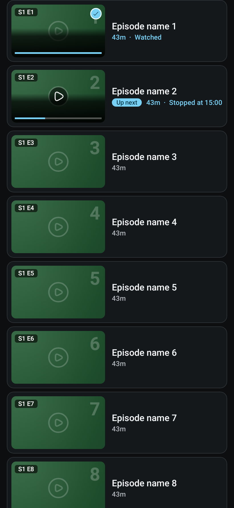
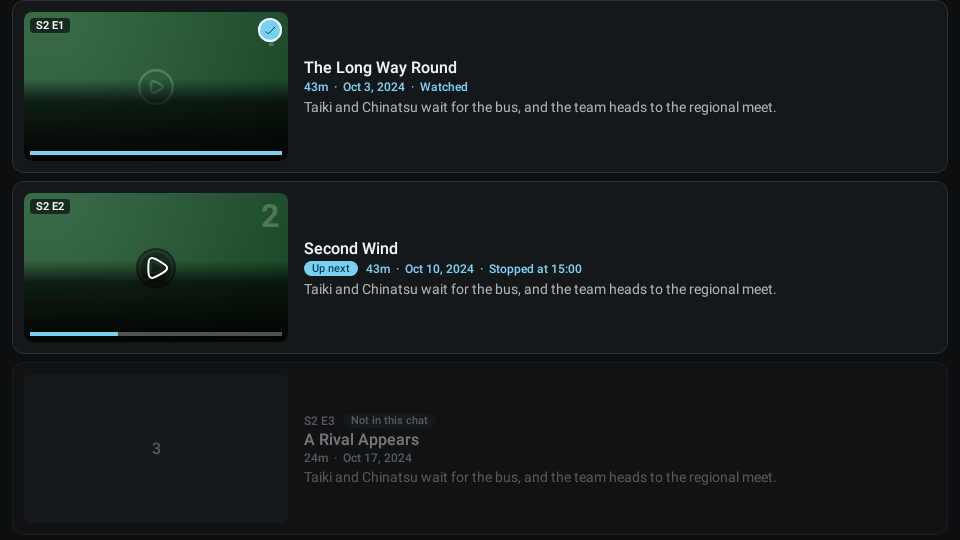
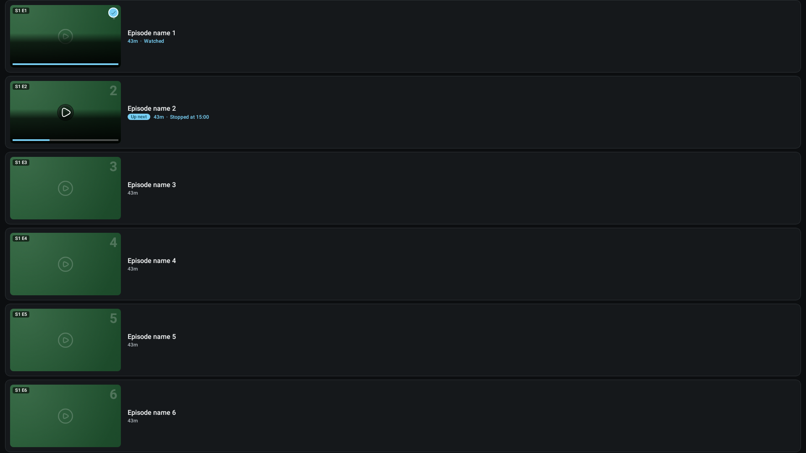
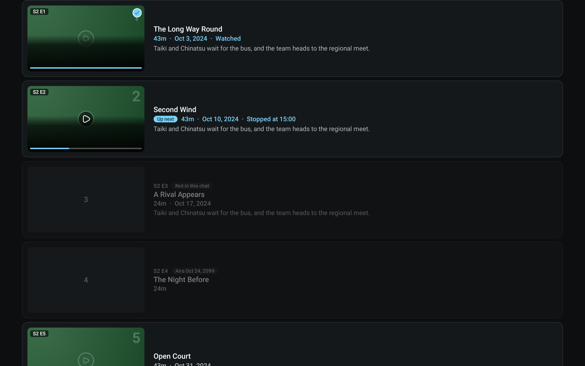
Android: the player's panel
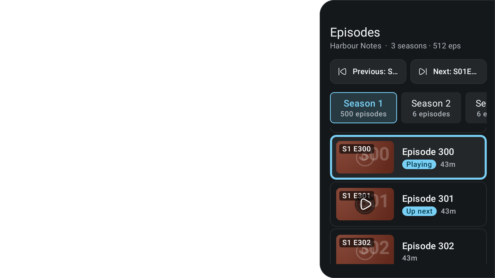
Desktop: the player's panel
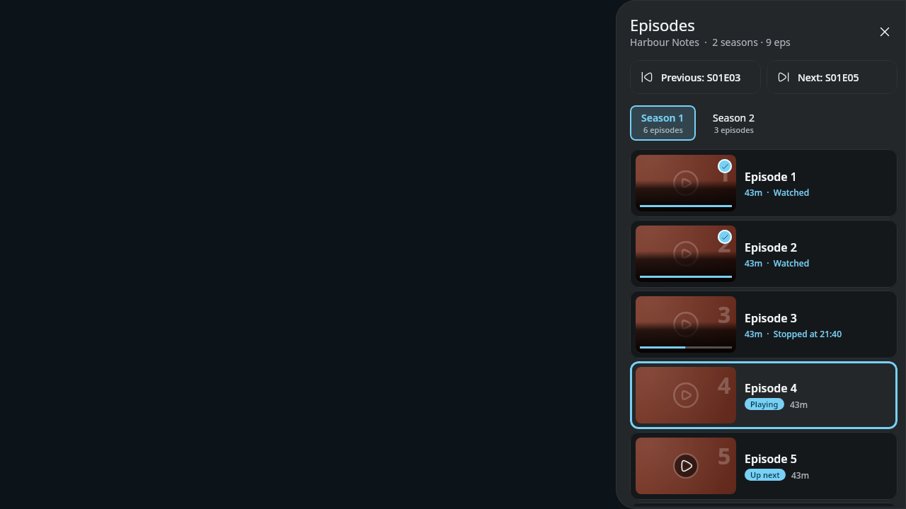
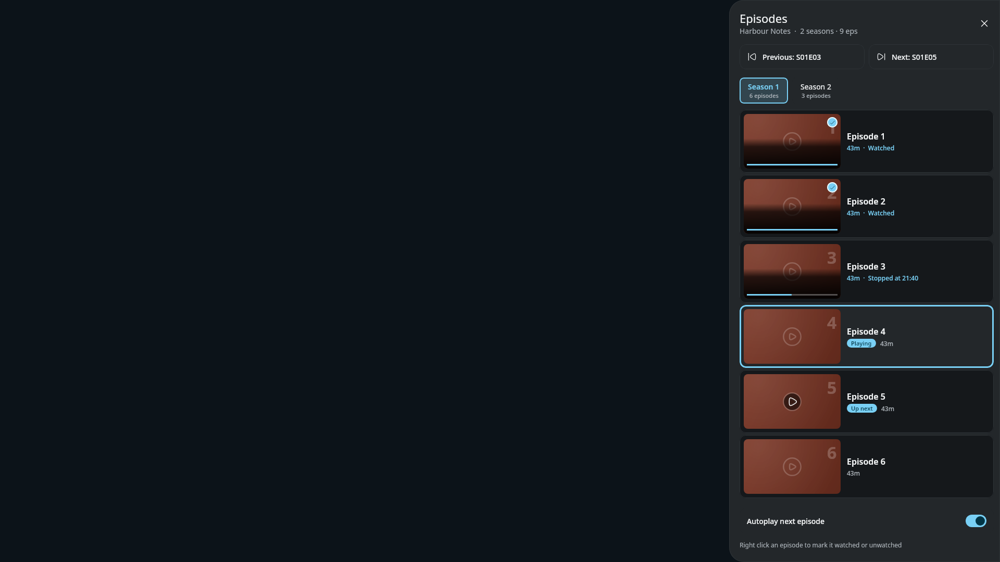
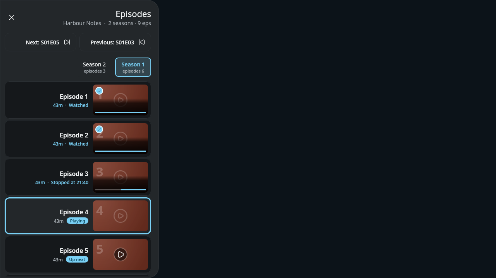
Web
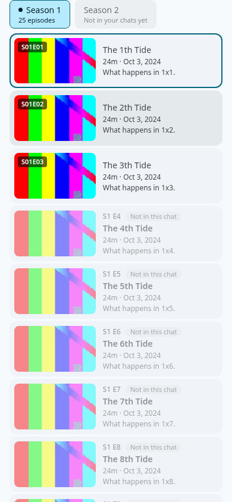
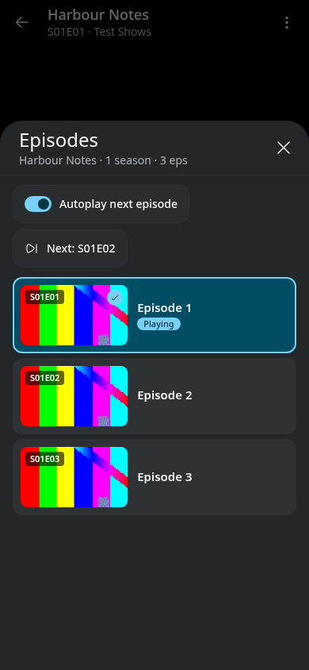
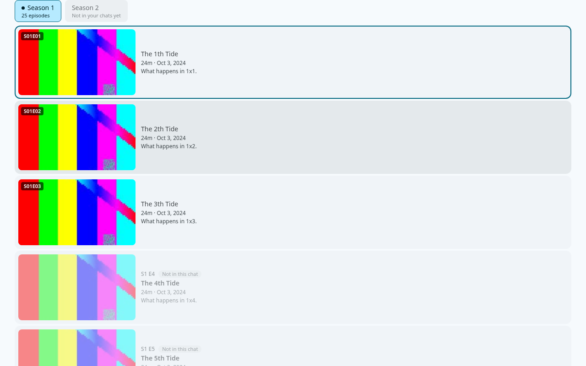
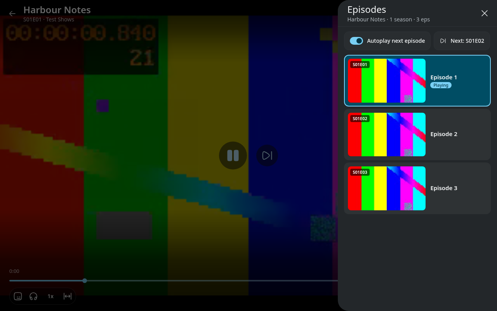
Not done, on purpose
- Synopsis on the focused card of a list: a card that grows on focus makes a D-pad walk jump. The show page keeps its 2 line clamp, the player's list shows it for the playing card only.
- The web player's list has no TMDB stills (Telegram's thumbnail only).
- A cover with no thumbnail shows its large number and the code pill together.
- No device pass (phone, TV, emulator); iOS compile not run on Linux.